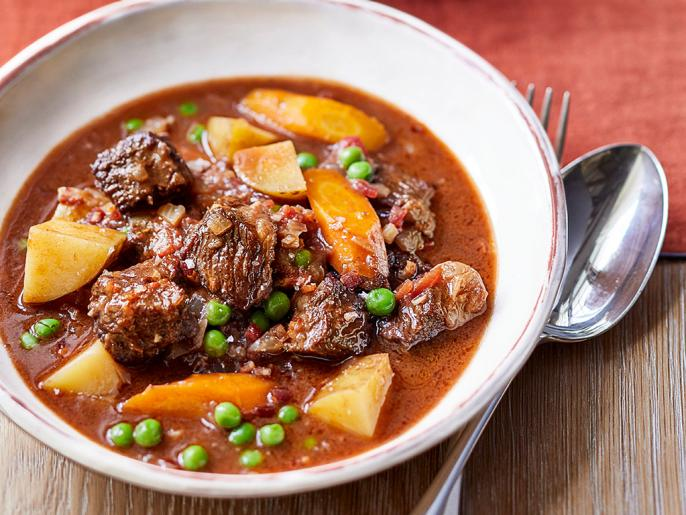

Beef Stew Recipe

Description:
This recipe, courtesy of Ina Garten, Food Network Magazine, was a
culmination of many different recipes and experimentation. It's a
classic recipe done in a modern way.
This beef stew is sure to become an easy to make favorite for cooks
of all experience levels. It is one of my favorite comfort foods
in the chilly seasons, and my family loves it!
- 3 tablespoons good olive oil
- 4 ounces small-diced pancetta
- 3 pounds boneless short ribs, cut in 1.5" chunks
- kosher salt and freshly ground black pepper
- 1/4 cup cognac or brandy
- 1 cup hearty red wine
- 2 cups chopped yellow onions
- 2 cups chopped fennel, trimmed and cored
- 2 tablespoons minced garlic
- 1 can of diced tomatoes
- 2 tablespoons of tomato paste
- 2 cups beef broth
- 1 pound carrots, scrubbed, cut 1/2 inch thick
- 1 pound yukon gold potatoes, scrubbed, 1 inch diced
- 10 ounces frozen peas
- Preheat oven to 300 F
- Heat the oil in a large (11- to 12-inch)
Dutch oven over medium heat. Add the pancetta
and cook for 4 to 5 minutes, until browned. With
a slotted spoon, transfer the pancetta to a
plate lined with a paper towel and set aside.
- Meanwhile, season the short ribs all over with 2
teaspoons salt and 1 teaspoon pepper. Brown half
the meat in the Dutch oven over medium heat,
turning occasionally, for 5 to 7 minutes, until
browned on all sides. Transfer the meat to a bowl
and brown the second batch. (Don’t cook them all in
one batch or they won’t brown!) Transfer the second
batch to the bowl and set aside.
- Off the heat, add the Cognac and 1/3 cup of the
wine to the pot, scraping up any browned bits, then
simmer over medium heat for one minute. Add the onions
and fennel and sauté, stirring occasionally, for 7 to 8
minutes, until the vegetables are tender. Add the garlic
and cook for one minute.
- Stir the tomatoes and tomato paste into the vegetables.
Add the remaining 2/3 cup of wine, the beef broth, the seared
meat (and juices), 2 teaspoons salt and 1 teaspoon pepper.
Bring to a simmer, cover and bake for 1 1/4 hours, checking
occasionally to be sure the liquid is simmering.
- Degrease the stew, if necessary. Stir in the carrots and
potatoes, cover and bake for one hour longer, until the
vegetables and meat are very tender when tested with a fork.
Just before serving, stir in the peas and pancetta, taste for
seasonings and serve hot in large, shallow bowls.